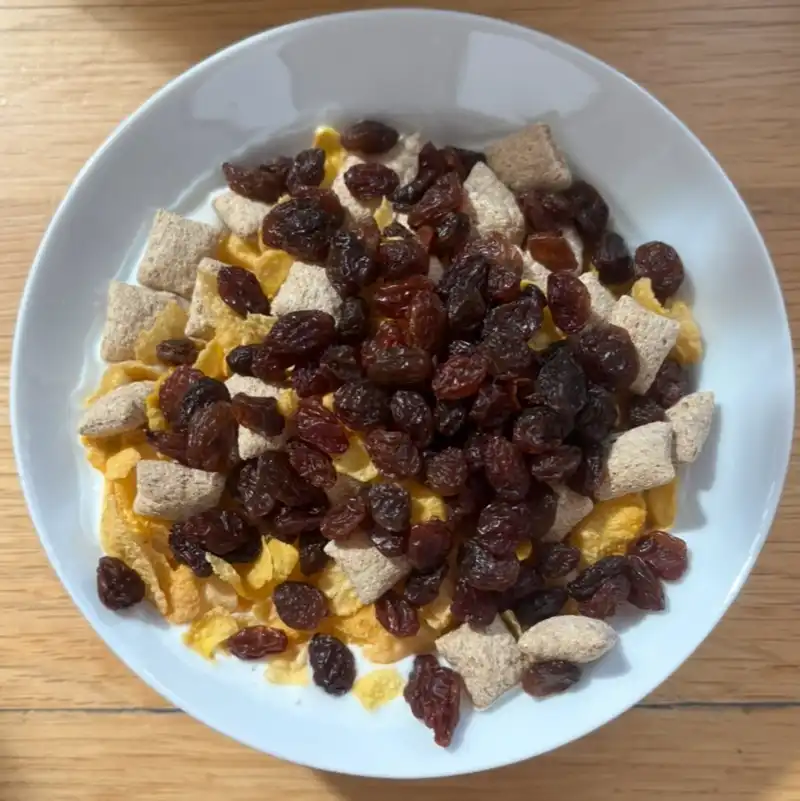

Artikel
Ropen skalla: Russin åt alla!
Östras flingbuffé anses vara en av de bästa i Sverige. Men efter att skolledningen tagit bort russinen från buffén har starka röster från alla program hörts. Och starkast röst av dem alla har eleverna i NANASAES24.
Russinen är något av det viktigaste som finns på Östra. Buffén lockar elever från hela länet - en undersökning visar att Östras flingbuffé var det som fick över 20% av de nya ettorna att välja just Östra. Stefan berättade stolt varje infokväll om den rika buffén som kunde mätta även de mest kräsna magarna. Men nu, utan russinen, är det tomma ord.
Det hela har lett till en begynnande kampanj för att få tillbaka de folkkära russinen. Löken talade med representanter från NaNaSaEs24, som är väldigt aktiva i frågan, där de berättade att det diskuteras vilka åtgärder som är nödvändiga för att få igång rörelsen. På klassens Instagram är meddelandet tydligt: “GIVE US RUSSIN”, med Marseljäsen spelandes i bakgrunden. De hotar att göra revolution ifall russinen inte kommer tillbaka, men det kräver fler anhängare. Hur det ska uppnås diskuteras fortfarande, men de är överens om att en demonstration hade varit på plats. Håll utkik på Lökens Instagram för uppdateringar.
Löken stödjer aktivt russinrörelsen och vill också se handling från Östras elever. Här är förslag på vad du kan göra:
- Ta upp russinen under nästa coachtid. Be din klassrepresentant att ta upp frågan under utvecklingsrådet nästa måndag.
- Sätt upp posters och affischer som uppmanar till handling och sprider budskapet.
- Gör ett inlägg på Insta med taggen #bringbackrussinen
- Prata med dina fellow Östraelever! Sprid ordet!
Länge leve revolutionen!
Upplaga 9
15/9/2025